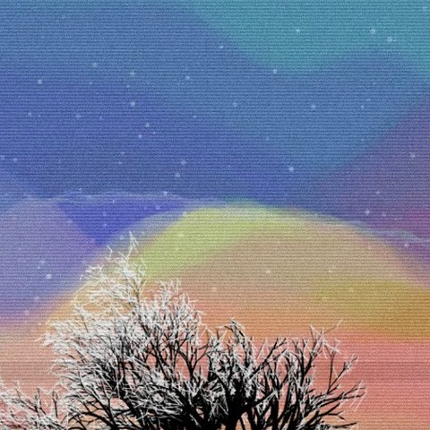
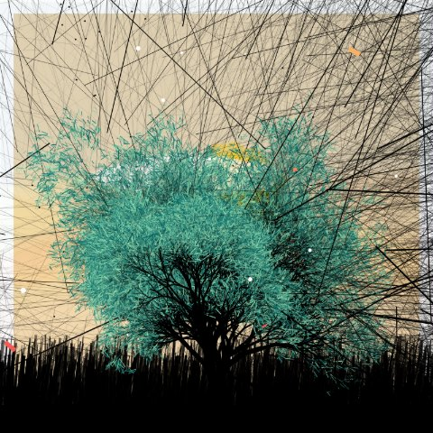
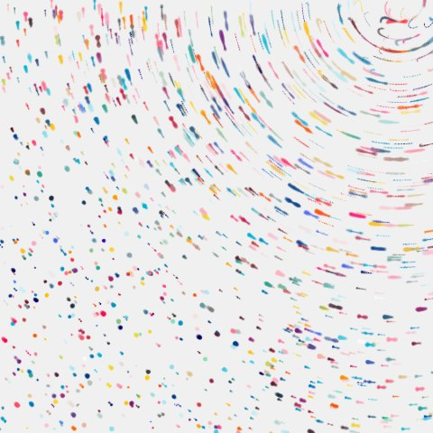

A music visualizer made of generative art
Upload a song. Milani cuts between artworks by Reza Milani on the beat, and each artwork moves with the music. The pictures were written in code. They are not frames from an AI video generator.



What the visualizer actually does
Music video mode is the audio-reactive edit. You pick two to six pieces. Milani listens for bars and beats and changes the picture there. Calm holds a picture for two to four bars. Pulse changes every bar. Fast changes every two beats. The join is either a hard cut or a short crossfade.
Between cuts, the artwork is not a still. Level, bass, pitch, and the beat all feed the drawing, which is why a tree, a field, or a field of marks shifts while the same shot is on screen. That is generative art from sound: the piece already has a form, and the music plays it.
If you would rather see the spectrum itself — bars, a line, a circle, an equalizer — that is a different picture. It lives under waveform and equalizer videos, in Voice video mode.
The artworks
These are the pieces the visualizer can cut between. They are the same works as in the Art tab of the editor:
- Rivers and trees: Night River, Spring Behind the River V, The Last Flower, Old Tree.
- Fields and hills: Dusk Hills, A Field in the Wind, Poppy Map, Fern.
- Abstract: Garden Lights, Emotions, Imago, Hart, Muz II, Paris.
Old Tree, A Field in the Wind, and Muz II take longer to draw. The editor marks them. A short passage at 720p is the quicker way to try one. If you leave the artwork list empty, Milani picks four for you. Pick for me does the same with a new choice.
Pressing Generate, or New edit, does not ask a model for a new style. It draws another version of the artwork Reza Milani already wrote, from a seed nobody has used. You can step back to the previous seed.
How to make the video
- Open the editor and switch to Music video.
- Upload a song or any music file. The waveform handles choose the passage.
- Choose two to six generative artworks, or let Milani pick four. Each one moves with the sound.
- Choose how often the picture changes: every few bars, every bar, or every two beats. The change can be a hard cut or a short crossfade.
- Press Make my video. A free export is the first 30 seconds, with a small mark. The file is made on your device.
1080p suits X, Instagram, and TikTok. The frame can be a post (4:5), a square, a story (9:16), or wide 16:9. Export runs in the browser. A longer piece of generative art can take a while to draw; the page estimates that before it commits you to the wait. Collectors of the work on Verse can export up to 5 minutes without the mark, and 4K is part of that access.
A voice recording can use one of these artworks too, as a single picture that does not cut. That path is the audio to video converter. Music video mode is the one that edits between several pieces.
Questions
How is this different from a bars visualizer?
A bars or equalizer video draws the spectrum of the sound. This music visualizer shows Reza Milani’s generative artworks and cuts from one to the next on the beat. The art itself also moves with the music. Both are in Milani; the waveform page is the one for bars and lines.
Is the art made by an AI model?
No. Reza Milani wrote each artwork in code. Generate picks a new seed and draws another version of that same piece. Your music drives the motion. No image model and no video model is called.
Which artworks can I use?
Night River, Spring Behind the River V, Dusk Hills, Poppy Map, Garden Lights, The Last Flower, Emotions, Old Tree, A Field in the Wind, Fern, Imago, Hart, Muz II, and Paris. Pick two to six. If you pick none, Milani chooses four.
How long is a free music video?
The first 30 seconds of the passage you selected, with a small Made with Milani mark. Collectors who minted Reza Milani’s art on Verse can export up to 5 minutes without the mark. 1080p is the usual size; 4K is part of collector access.